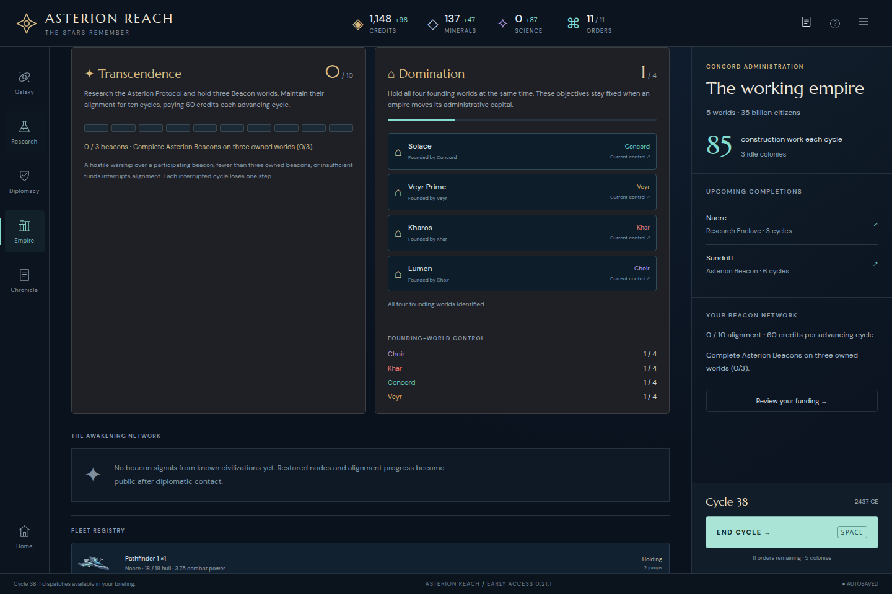

Minor wording mismatch observed during the actual default ASTERION continuation on immutable 0.21.1, cycle 38. The Empire context button says Review your funding, but with zero completed Beacons and zero alignment it lands on the requirements card. That card intentionally has no budget yet.
The smallest correction is a conditional label such as Review alignment for this state, retaining the funding label when the funding outlook is present. Navigation and campaign progress work.
Exact reproduction and source lines · Untouched actual UI export · Visible DOM observation · Frozen hashes

The earlier driver navigation timeout was caused by a new foreign-war briefing and is retained separately in the campaign record. The screenshot above follows dismissal of that briefing and successful activation of the link.